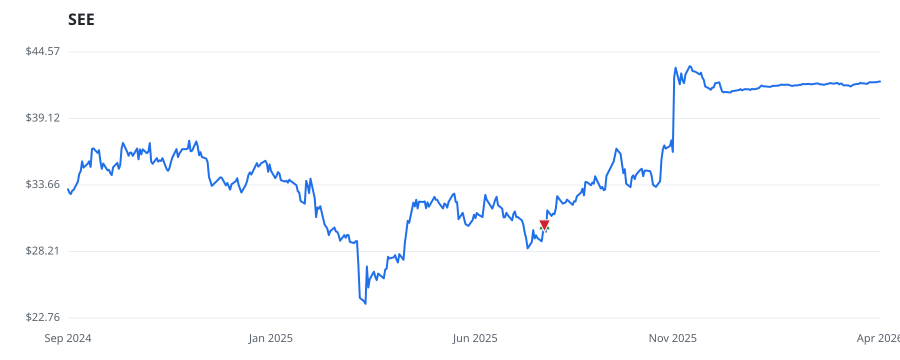

← Back to leaderboard
SEE — SEE
Other
· unknown cap
$23.93–$43.40
Available range
Members who bought SEE earned a dollar-weighted
+0.0% from their disclosure
dates, versus +0.0% for the S&P 500 over the same holding
windows (+0.0% alpha).

▲ green = a disclosed purchase · ▼ red = a disclosed sale (plotted on disclosure date)
Key financials (FY 2025)
Revenue $5.4B
Net income $505.5M Operating income $725.7M
Diluted EPS $3.43 Assets $7.0B
Equity $1.2B
Recent news
[Latest] Global Compostable Flexible Packaging Market Size/Share Worth USD 5.18 Billion by 2035 at a 12.3% CAGR: Custom Market Insights (Analysis, Outlook, Leaders, Report, Trends, Forecast, Segmentation, Growth Rate, Value, SWOT Analysis)
— GlobeNewswire Inc., 2026-03-26 Mono-Material Flexible Food Packaging Films Market Poised for Strong Growth, Projected to Reach USD 2.87 Billion by 2035
— GlobeNewswire Inc., 2026-03-04 This $6 Billion Materials Firm Has Decided To Go Private
— Benzinga, 2026-03-02 Aluminium-Free High-Barrier Films Market to Reach USD 3.82 Billion by 2035 as Sustainable Packaging Replaces Foil-Based Structures
— GlobeNewswire Inc., 2026-03-02 North American Yogurt, Cheese & Meat FFS Packaging Market is Poised for Strong Growth 2026 to 2035
— GlobeNewswire Inc., 2026-02-25
🏛️ Members of Congress who traded SEE
Member Chamber Out-performer
Disclosed buys $ Return on buys
Lisa McClain
house —
$8K
+0.0%
Disclosed $ figures are bracket midpoints — filings report ranges
(e.g. $1,001–$15,000), not exact amounts.
Trades: U.S. House Clerk & Senate eFD disclosures · Market data: Polygon.io ·
Returns assume buying at the close on/after each disclosure date, benchmarked vs SPY.
Educational use only — not investment advice.